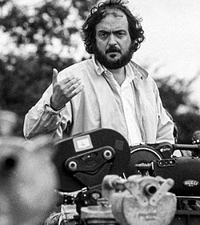

| Anasayfa | Martin Scorsese | Christopher Nolan | Quentin Tarantino | Stanley Kubrick |
Stanley Kubrick | |
Stanley Kubrick, Amerikalı film yönetmeni, senarist, yapımcı, fotoğrafçı ve sinematograf. Estetik kusursuzluğu elde edebilmek için denediği farklı teknik yöntemlerle dünya çapında sinemayı etkilemiş ve tüm zamanların en iyi yönetmenlerinden biri olarak kabul edilmiştir. Eserlerinin çoğunda özgün senaryo yazmayı tercih etmemiş, edebiyat yazarlarının eserlerini sinemaya uyarlamıştır. Kubrick sinemasında, mükemmeliyetçi atmosfer dışında yoğun sembolizm ve gerçekçilik görülür.Korku, savaş, polisiye, kara mizah ve bilimkurgu olmak üzere farklı türde eserler vermiştir. Kubrick, beş kez aday gösterildiği Oscar Ödülleri'nden sadece birini, 2001: Bir Uzay Macerası filmi ile En İyi Özel Efekt dalında kazanmıştır. Martin Scorsese, James Cameron ve Woody Allen gibi isimler, Kubrick'i önemli bir ilham kaynağı olarak gördüklerini belirtmişlerdir. |  |
Yaşamı |
|
KariyeriKariyerine New York'un Look dergisine amatör fotoğraflar çekerek başlayan Kubrick, kısa zamanda Look dergisinin fotoğrafçılarından biri oldu. İzlediği filmlerden çok daha iyisini yapabileceğine inanarak yönetmenlik yapmaya başladı. İlk filmleri Fear and Desire, Killer's Kiss ve The Killing ile kendisini ispatladı. Paths of Glory ve Spartaküs ise, onun iyi yönetmenler arasındaki yerini almasını sağladı. 1960'lı yıllarda Lolita filmini çekmek üzere Birleşik Krallık'a giden Kubrick, yaşamının geri kalanını bu ülkede, Hertfordshire'da satın aldığı Childwickbury Köşkü'nde geçirdi. Dr. Garipaşk, satirik komedinin sinemadaki önemli örneklerinden biri olarak kabul edilir. Ancak Stanley Kubrick'i 20. yüzyılın en önemli yönetmenlerinden biri yapan, 1968 MGM Cinerama prodüksiyonu olan 2001: Bir Uzay Macerası ve 1971 yapımı Otomatik Portakal'dır.William Makepeace Thackeray'in bir romanının sinemaya uyarlanması olan Barry Lyndon, Jack Nicholson'ın oynadığı The Shining, yaklaşık 7 yıl çalıştığı savaş filmi Full Metal Jacket ve son anda yapmaktan caydığı Yapay Zeka, Kubrick efsanesini sürdüren filmler oldular. Arthur Schnitzler'in Traumnovelle romanından uyarlanan ve Tom Cruise ile Nicole Kidman'ın oynadıkları, Gözleri Tamamen Kapalı'yı bitirdikten birkaç gün sonra ölen Kubrick; Childwickbury Manor, Hertfordshire, Birleşik Krallık'ta toprağa verilmiştir. | |
Filmleri
|